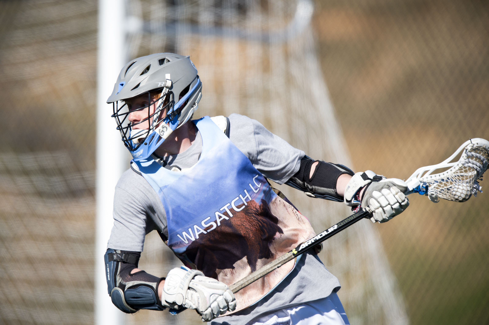
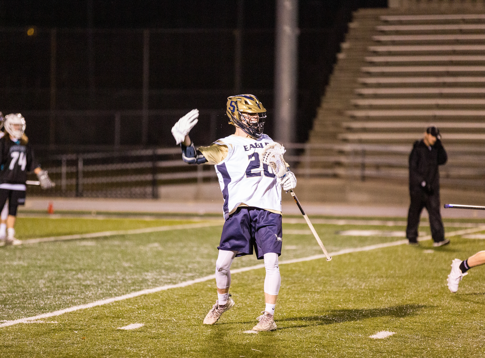

Favorites and why
- National Parks
- There are a variety of features

- They have recognizable features

- They often have vibrant outdoor colors

- Skiing
- I love to ski
- I think that the white snow looks so good next to a skier

- They have really good action shots
- Sports
- I have always loved sports
- There is a chance that you can capture a really cool moment 
- You can follow your favorite team and players 